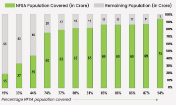

| Percentage NFSA population covered | NFSA Population Covered (in Crore) | Remaining Population (in Crore) | Total Bar Height (%) | | :--- | :--- | :--- | :--- | | 19% | 15 | 65 | ~84% | | 33% | 27 | 53 | ~70% | | 44% | 35 | 45 | ~80% | | 74% | 60 | 20 | ~80% | | 77% | 63 | 17 | ~80% | | 80% | 65 | 15 | ~80% | | 81% | 65 | 15 | ~80% | | 85% | 69 | 11 | ~80% | | 86% | 69 | 11 | ~80% | | 86% | 69 | 11 | ~80% | | 87% | 69 | 11 | ~80% | | 94% | 75 | 5 | ~100% |
